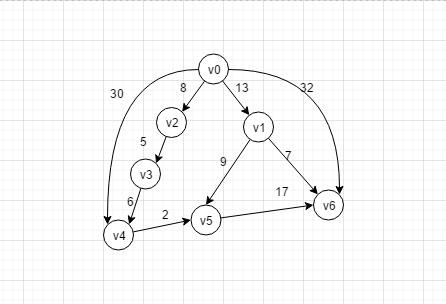
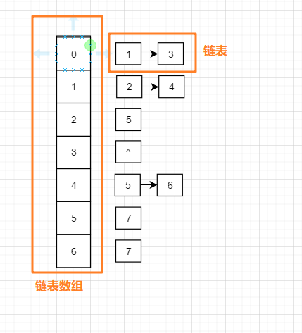

本文将解析如何使用 Dijkstra 算法求解最短路径问题
如下图:

就像上图, 每一个点可以理解成一个岔路口, 线段就是路径, 线段上的值为长度, 如何找到从 v0到各个岔路口的最小值, 也就是最短路径问题
最短路径问题 和 深度广度搜索一样, 都是建立在图这个数据结构上的, 因此我们可以选用邻接表 或者是临接矩阵 来表示上图 , 封装类如下:
public class Graph01 {
// 使用邻接表的方式表示图
private LinkedList<Edge> [] graph ;
// 图中一共多少个点
private int size;
public Graph01(int size) {
this.size = size;
this.graph = new LinkedList[this.size];
for (int i = 0; i < size; i++) {
graph[i]=new LinkedList<>();
}
}
// 添加点的方法
public void addEdge(int s, int e, int w) {
this.graph[s].add(new Edge(s, e, w));
}它大概长这个样子:

一条边有三个描述属性, 两边的顶点 + 权重
// 边的封装类
private class Edge {
// 开始点的值
private int start;
// 结束点的值
private int end;
// 权重
private int weight;
public Edge(int start, int end, int weight) {
this.start = start;
this.end = end;
this.weight = weight;
}
}
使用两个属性描述顶点, 分别是 dist 和 id , 比如我们描述 v3 , 那么它的id = 3 , dist是到起点v0的距离, 故 dist =13
// 图中各个点的封装类
private class Vertex implements Comparable<Vertex> {
// 用户指定的起点到当前点的距离
private int dist;
// 顶点的id (v1 v2 中的 1 和 2)
private int id;
public Vertex(int dist, int startId) {
this.dist = dist;
this.id = startId;
}
@Override
public int compareTo(Vertex o) {
if (o.dist > this.dist) return -1;
else return 1;
}
}还是看这个图: 比如我们寻找的最短路径就是 v0 到 其它所有的顶点的最短路径 , 按照广度优先顺序遍历这个图
寻找 v0 的临接点 , 于是我们能发现 v1 v2 v4 v6 这四个点都是v0的临界点, 然后我们分别给 v1 v2 v4 v6 这四个点做出如下的标记
v1.dist = 13 // dist表示的是 当前点到起点的距离
v2.dist = 8
v4.dist = 30
v6.dist = 32但是我们发现, 直接相连 , 并不一定是最短的 , 就像下面这样 , 虽然都能到v4 , 但是很显然, 如果按照v0 -> v2 -> v3 -> v4 会更近 , 这就意味着我们需要不断的更新每一个节点到起点的dist值
v0.dist + v4.dist = 30
v0.dist + v2.dist + v3.dist = 19 那么, 是否存在一个点到起点v0的dist是 百分百确定并且不会更改呢??? 没错,就是 它所有临界点中, dist最小的那个点
于是, 我们的编码流程就是下面这样
默认所有的点的 dist = Integer.MAXVALUE
如果看这图, 用笔跟着上面的逻辑画一下的话, 就能发现, 确实能找到 v0到其他各个点的最短路径, 唯一不好理解的部分就是我们用黑色加粗的地方,
我们举例子解释一下 , 还是上图:
比如, 就从开头说 :
通过上面的步骤4 , 我们可以遍历到v0的直接临接点是 v4 , 这是第一次访问, 于是我们可以继续处理, 然后我们按照 步骤4.1 进行判断 v0.dist + 30 < v4.dist 条件满足了(默认所有的点的 dist = Integer.MAXVALUE), 于是我们就更新 v4.dist = v0.dist + 30 < v4.dist =30
经过了几轮循环后, 假设当前已经是v3了, 这是我们继续来到步骤4.1中进行判断, v3.dist + 6 < v4.dist 我们发现也是满足的, 因为一开始算出了 v4.dist= 30 , 于是进一步更新这个值, 使v4.dist = v3.dist + 6 , 这样迭代下面 , 我们就能获取到起点 到所有点的最短路径
最短路径 dijkstra 算法实现如下:
public void dijkstra(int start, int end) {
// 标记是否曾访问过
boolean[] visited = new boolean[this.size];
// 还路径
int [] resultArray = new int[this.size];
// 存放图中的所有的顶点
Vertex[] vertices = new Vertex[this.size];
for (int i = 0; i < vertices.length; i++) {
vertices[i]=new Vertex(Integer.MAX_VALUE,i);
}
// 获取顶点, 并赋初值为0
Vertex startVertex = vertices[0];
startVertex.dist = 0;
visited[start] = true;
// 创建队列,并将头结点入队
Queue<Vertex> queue = new PriorityQueue<>();
queue.add(startVertex);
while (!queue.isEmpty()) {
// 取出当前距离开始点 dist 最近的点
Vertex minVertex = queue.poll();
// 如果已经找到了顶点就退出去
if (minVertex.id==end) break;
// 遍历当前点的所有临接点
for (int i = 0; i < graph[minVertex.id].size(); i++) {
// 依次获取出他们的边
Edge edge = graph[minVertex.id].get(i);
// 根据边的信息, 取出它的取出它的临界点
Vertex nextVertex = vertices[edge.end];
// 如果当前点 + 当前边的长度 < 当前点到它临界点nextVertex的长度 就说明找到了这个直连点更新的点路径, 于是更新原来的直联点的数据
if (minVertex.dist + edge.weight < nextVertex.dist) {
// 更新原来的不准确的路径值
nextVertex.dist = minVertex.dist + edge.weight;
/**
* 数值 0 0 0 2 0 0 0
* 下标 0 1 2 3 4 5 6
*
* 下标为3位置的值为2 , 表示在图中 vertex3的前面的vertex2
*/
resultArray[nextVertex.id]=minVertex.id;
if (!visited[nextVertex.id]){
queue.add(nextVertex);
visited[nextVertex.id]=true;
}
}
}
}
System.out.print(start);
print( start,end ,resultArray);
}
/**
* 例如:
* 数值: 0 0 0 2 3 1 1
* 下标: 0 1 2 3 4 5 6
* 我们得到 从 0 - 6 的路径该怎么走呢? 按照如下的顺序将方法压入栈, 弹栈时即可获取到路径
*
* | 0 0 |
* | 0 1 |
* | 0 6 | 方法栈
* ----------
*/
private void print(int start, int end, int[] resultArray) {
if (start==end) return;
print(start,resultArray[end],resultArray);
System.out.print("->"+end);
}